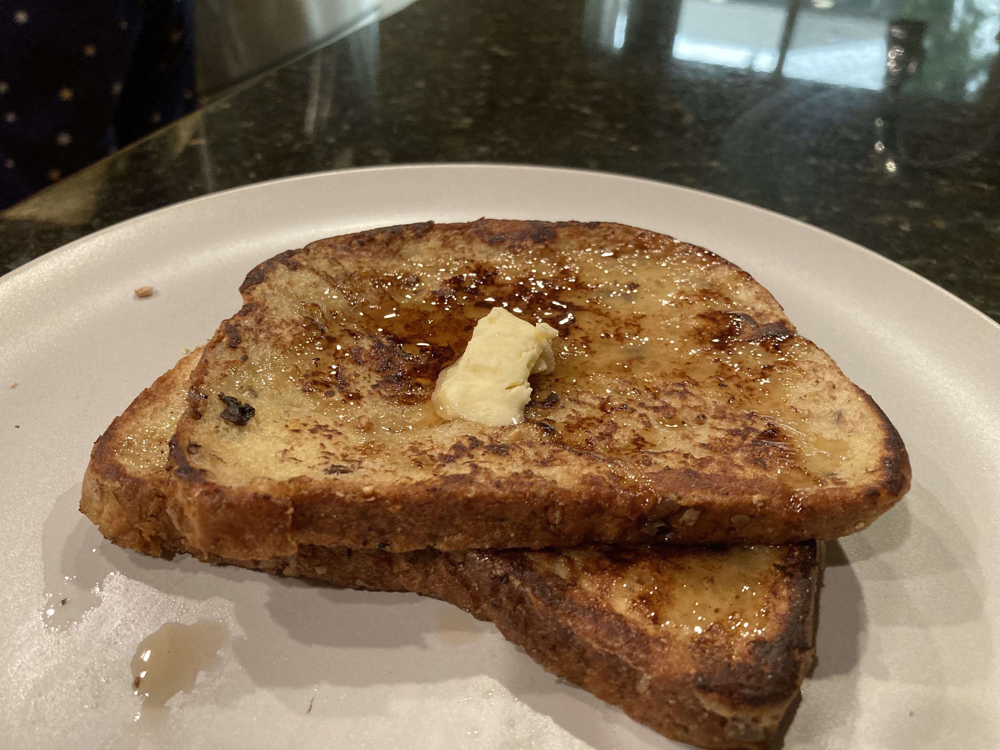

My Portfolio
I love cooking! From Rasberry Chocolate Cake to Ramen and Bacon to Brownies!
Here is a list of my favorite foods to cook:
- Brownies
- Pasta
- Tea
- Grilled Cheese
- Korean Chicken Wings
Now for my easiest delicious recipe!
French Toast

Ingredients
- 2 tsp Clarified butter
- 1.0 tbsp Sugar
- 1/2 tsp cinamon
- 1 Large Egg
- 1/4 tsp Salt
- 1/4 cup Milk
- 1/2 tsp Vanilla
- 2 slices of bread
Instructions
- Mix the eggs, milk, sugar, vanilla, cinamon and salt in a large bowl. Before adding all the ingedients, make sure your bread fits in the bowl
- After whisking in the previously mentioned ingredients, heat up a medium pan and throw in half of the clarified butter
- Cover the slice of bread with the egg wash and throw it on the hot pan. Flip after 1 and a half minutes and cook for 1 and a half more
- Serve while warm with maple syrup and butter. Enjoy!